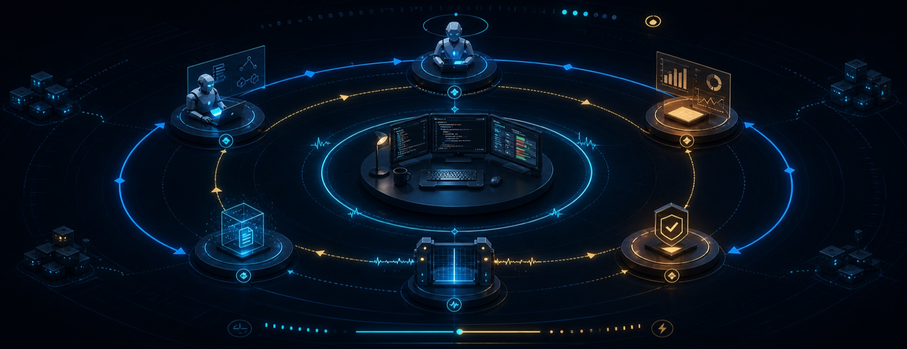
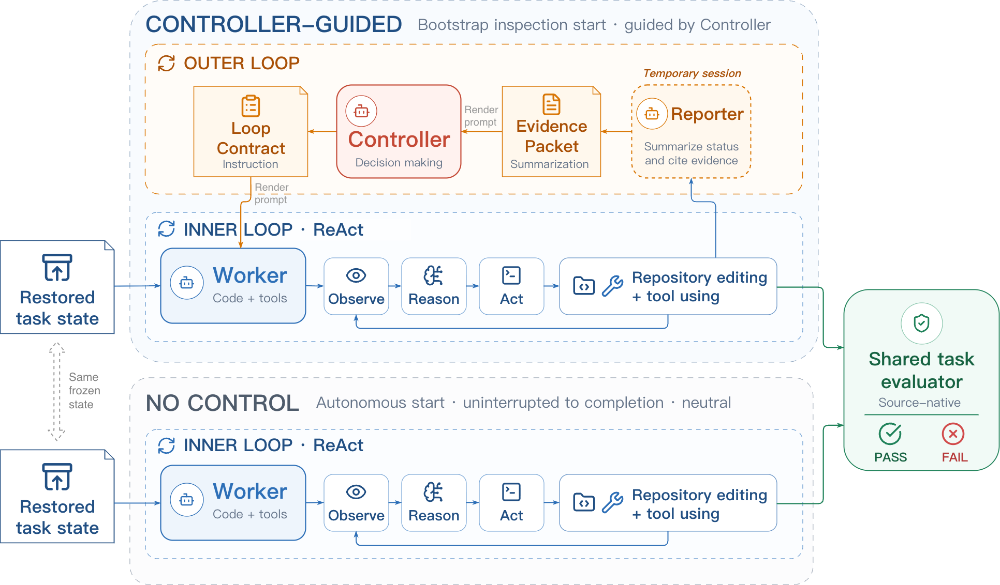

Track progress
Recognize what is complete, what remains, and which evidence actually supports it.

Runtime control for long-horizon coding agents
Loop Engineering organizes long-running coding work around loops that monitor progress, assign work, run checks, and decide what an agent should do next. LoopArena evaluates the model in that loop—the Controller—while a separate Worker and the execution setup stay fixed.
All models are evaluated as Controllers with the same Worker and execution setup.
| Rank | Model | Strict Success Rate ↑ | Mean cost / run ↓ |
|---|---|---|---|
| 1 | GPT-5.5 | 24.69% | $18.84 |
| 2 | Qwen3.7-Plus | 23.46% | $6.89 |
| 3 | Claude Opus 4.8 | 20.99% | $16.82 |
| 4 | DeepSeek-V4-Flash-0731 | 19.75% | $10.24 |
| 5 | GLM 5.2 | 16.05% | $4.86 |
Higher scores and lower costs are better. Reference policies are not ranked.
Download table data (.json)The missing layer
Most existing coding benchmarks score the final repository state, combining two abilities: doing the coding work and controlling how that work unfolds. LoopArena isolates the second. Every evaluated Controller directs the same Worker with the same tools, budgets, task state, and evaluator.
Recognize what is complete, what remains, and which evidence actually supports it.
Turn the current state into a concrete next assignment instead of generic advice.
Catch missing checks, incomplete paths, and claims of completion that outrun evidence.
Avoid both premature termination and expensive work after the task is already complete.
One controlled comparison
The Worker edits code. A temporary Reporter summarizes evidence. The Controller reads a structured Evidence Packet and returns the next Loop Contract—or decides to stop.

Execution-calibrated ladder
Evaluation scope and runtime cost increase from Type I to Type III. The lower-cost settings are grounded in execution, while full tasks remain the long-horizon anchor.
Choose the best next Loop Contract from four candidates at a frozen control point. LoopArena incurs the candidate-execution cost in advance during benchmark construction, so a new Controller is evaluated through low-cost multiple-choice questions with no Worker execution.
Start from a standardized workspace for one selected task slice and retain adaptive Controller–Worker interaction through implementation and verification. Each Type II task is paired with the Type III full task from which it is derived.
Guide the Worker from the original task state through the complete long-horizon coding task. Source-native evaluators score the terminal repository state.
Start with one decision
Type I needs no Docker and makes one model call in this smoke test. It is the fastest way to verify installation, endpoint configuration, and output accounting.
$ git clone https://github.com/AMAP-ML/LoopArena.git
$ cd LoopArena
$ python -m pip install -e '.[gateway]'
# Use any OpenAI-compatible endpoint.
$ export OPENAI_API_KEY=YOUR_API_KEY
$ export OPENAI_BASE_URL=YOUR_BASE_URL
# Validate configuration with zero model calls.
$ looparena-type1-run \
--data benchmarks/type1/questions.jsonl \
--model MODEL_ID \
--preflight-only
# Run one execution-validated control question.
$ looparena-type1-run \
--data benchmarks/type1/questions.jsonl \
--model MODEL_ID \
--output results/type1-smoke.jsonl \
--limit 1 --concurrency 1Built by DreamX Team